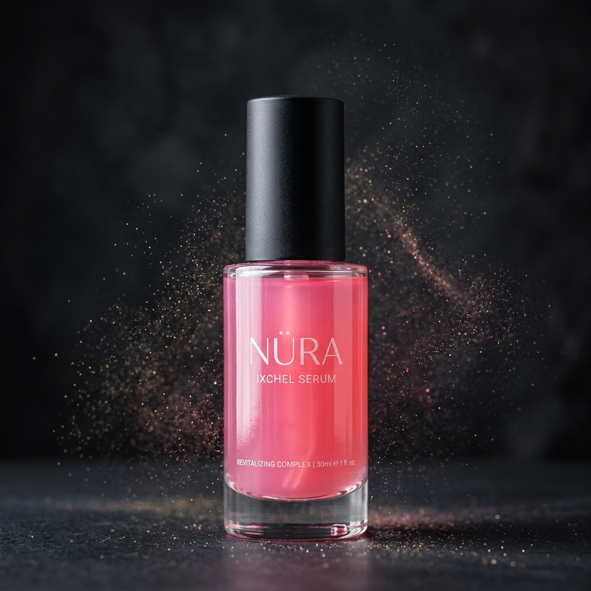
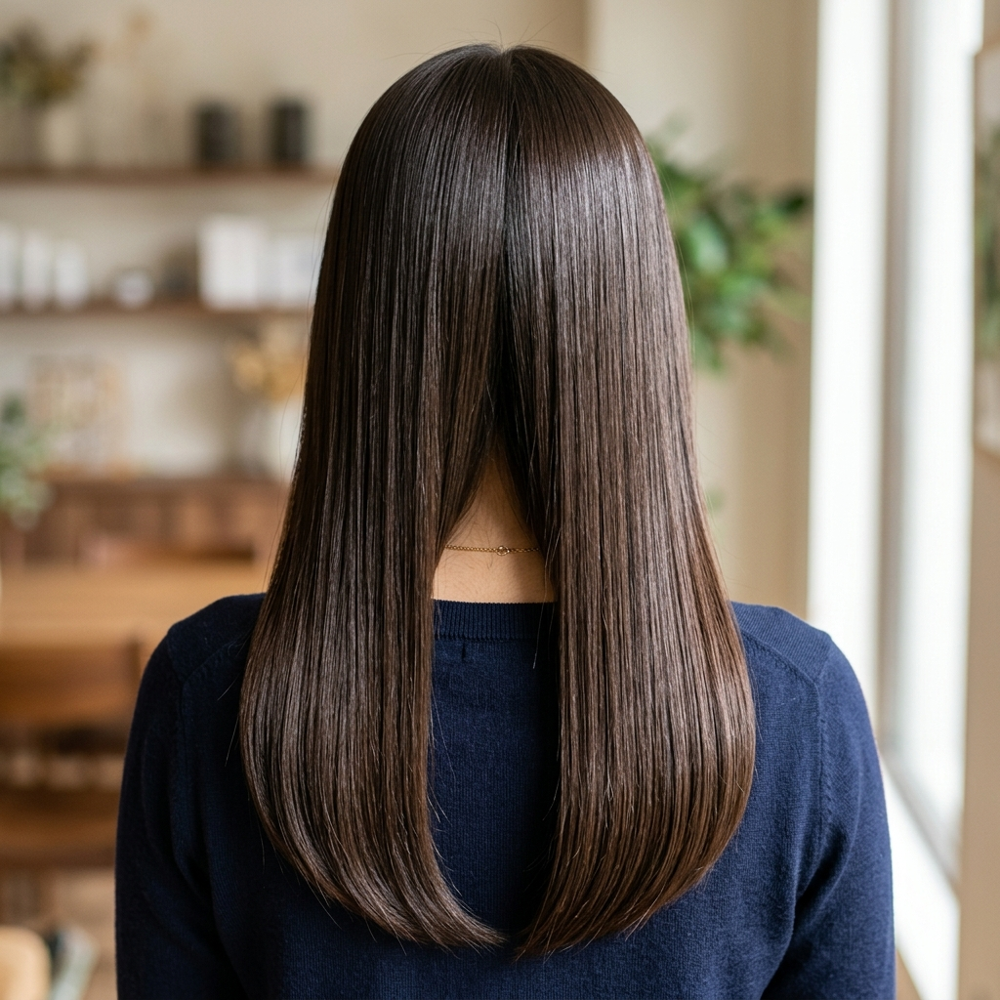

NATURAL • ÚNICO • RADIANTE

Domina el caos. Radiante en segundos.
Serum antifrizz de emergencia hecho a mano por artesanos.
NATURAL • ÚNICO • RADIANTE

Domina el caos. Radiante en segundos.
Serum antifrizz de emergencia hecho a mano por artesanos.
"Mi cabello siempre fue un caos con la humedad. Después de 2 semanas usando Ixchel, puedo salir sin miedo. ¡Huele increíble!"
— María G., 28 años, CDMX
"Probé mil productos para el frizz. Este es el único que no deja mi pelo grasoso y el efecto dura todo el día."
— Ana L., 34 años, Guadalajara
"Me encanta el concepto maya y que sea artesanal. El sérum azul tiene un aroma muy fresco. Mi cabello se ve más brillante."
— Sofía R., 25 años, Monterrey
⭐ 4.8/5 promedio en 127 reseñas
92% reportan reducción visible de frizz
87% volverían a comprar
*Testimonios simulados con fines académicos

De frizz a brillo en 3 gotas
Aplica de 3 a 5 gotas en la palma de tu mano, frota suavemente y distribuye uniformemente en el cabello seco o húmedo, de medios a puntas. No enjuagues.
No. Nuestra fórmula ligera de aceites botánicos se absorbe rápidamente sin dejar residuos grasosos.
Hasta 24 horas en condiciones normales. En alta humedad, entre 12-18 horas.
Misma fórmula base anti-frizz. Ixchel (rosa) incluye extracto de flor de jamaica con aroma floral dulce. Itzamná (azul) contiene espirulina con aroma fresco herbáceo.
Sí. Funciona en cabello lacio, ondulado, rizado o chino. Recomendado para cabellos con frizz o dañados.
95% de origen natural. Aceites botánicos puros (argán, jojoba, almendras). Sin parabenos, sulfatos ni siliconas agresivas.
Sí. Envío gratis en pedidos mayores a $500 MXN. Entrega en 3-5 días hábiles.
Meta 5,000 visitas/mes
Meta 3-5%
(150-250 ventas/mes)
$350 MXN
30%
recompra en 90 días
Inversión: $5,000/mes
Ingresos: $52,500/mes
ROI 950%
*Métricas proyectadas con fines académicos